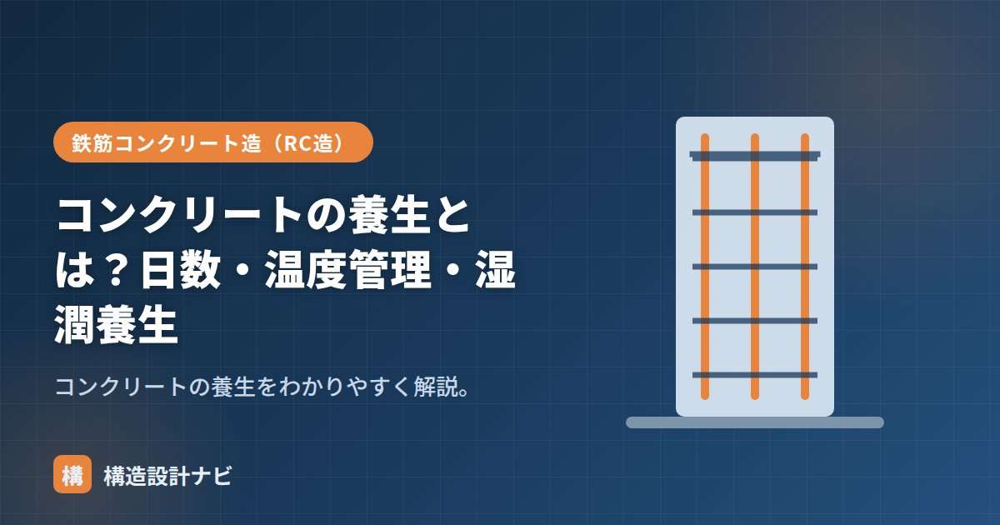

コンクリートの養生とは？日数・温度管理・湿潤養生

養生（ようじょう）とは、打ち込んだコンクリートが固まる間、水分と適切な温度を保ち、有害な影響から守ることです。コンクリートの強度・耐久性を決める重要な工程で、英語では「curing」と呼ばれます。どれほど優れた配合設計をしても、打込み後の養生が不十分であれば、設計で想定した強度・耐久性は得られません。養生はコンクリート工事の最終段階でありながら、品質を最終的に決定づける工程であるといえます。
- 養生は打込み後のコンクリートの水分・温度を保ち、有害な影響から守る工程
- 目的は強度発現・ひび割れ防止・耐久性確保・外力からの保護の4つ
- 方法は湿潤養生・温度管理・保護に大別され、初期の管理が特に重要
養生の意味と目的
コンクリートはセメントと水の反応（水和）で固まります。途中で水分が失われたり、低温になったりすると反応が止まり、強度が出ません。養生の目的は次のとおりです。
- 強度を十分に発現させる（水分を保つ）。
- ひび割れを防ぐ（急乾燥・温度変化を防ぐ）。
- 耐久性を確保する（表面を緻密に）。
- 振動・衝撃・荷重から保護する。
なぜ養生が必要なのか
コンクリート表面は、大気に接しているぶん内部より乾燥しやすい部分です。表面の水分が早く失われると、水和反応が途中で止まり、その部分の強度・緻密さが不足します。表面が緻密でないと、外部からの水分・塩分・二酸化炭素が侵入しやすくなり、中性化や鉄筋の腐食が進みやすくなります。つまり養生は、単に「固まるのを待つ」だけの工程ではなく、表面のコンクリート品質を内部と同等以上に高めるための積極的な工程です。特に打込み直後の数日間は水和反応が最も活発な時期であり、この期間の管理の良し悪しが、その後の耐久性を大きく左右します。
養生の方法
| 種類 | 内容 |
|---|---|
| 湿潤養生 | 散水・養生シート・膜養生剤で乾燥を防ぐ |
| 温度管理 | 寒中は保温・給熱、暑中は日覆い・散水 |
| 保護 | 振動・衝撃・早期載荷を避ける |
湿潤養生は最も基本的な方法で、散水による給水や、シート・養生マットによる被覆、あるいは表面に膜をつくって水分の蒸発を防ぐ膜養生剤の塗布などが用いられます。温度管理は季節に応じて内容が異なり、冬季は凍結を防ぐための保温・給熱、夏季は急激な乾燥や温度上昇を抑えるための日除け・散水が中心になります。加えて、硬化初期のコンクリートは強度が低く衝撃や振動の影響を受けやすいため、型枠の取り外しや上部への載荷のタイミングにも注意が必要です。
養生日数
湿潤養生を続ける養生期間は、セメントの種類と気温で変わります（例：普通ポルトランドで5日以上、早強で3日以上、高炉・中庸熱で7日以上）。必要な日数の考え方や気温別の違い、寒中コンクリートの規定については「養生期間」で詳しく解説しています。
同じ配合でも、養生が不十分だと強度が大きく落ちます。打込み後の初期の湿潤養生が、コンクリート品質を左右します。
よくある注意点
「型枠を外した後は養生不要」と誤解されがちですが、型枠を外した面も引き続き乾燥・急激な温度変化にさらされるため、湿潤養生や保護が必要です。特に打ち放し仕上げのように後で覆えない部位では、養生不足によるひび割れ・色むらがそのまま美観の低下につながるため、より丁寧な養生計画が求められます。
配合計画書に「湿潤養生7日」と書いても、現場でシートが風でめくれていたり散水が数時間空いていたりすることは珍しくない。図面上の指示だけで満足せず、実際の養生状況を自分の目で確認することを工事監理の基本にしている。
養生の種類と目的（図解）
「養生」とひと口に言っても、目的の異なる複数の方法があります。状況に応じて組み合わせて使います。
養生不良がもたらす影響
| 養生の不備 | 直接の結果 | 長期的な影響 |
|---|---|---|
| 早期に乾燥させた | 水和反応が停止し表面強度が不足 | 中性化・鉄筋腐食が早く進む |
| 直射日光・風にさらした | プラスティック収縮ひび割れ | ひび割れから水が浸入し劣化を促進 |
| 凍結させた（冬） | 初期凍害で組織が破壊 | 強度が回復せず、打ち直しが必要になることも |
| 硬化前に荷重をかけた | ひび割れ・変形 | 耐力低下、仕上げの不具合 |
配合を間違えれば打ち直せますが、養生の失敗は後から補うことができません。表面が乾燥して水和が止まったコンクリートに、後から水をかけても強度は戻らないのです。しかも供試体は標準養生されているため試験では良好な値が出て、問題が見えにくいという厄介さもあります。数日間の手間を惜しむと、建物の寿命に何十年分の差が出る工程だと理解しておく必要があります。
よくある質問
Q1. 養生はいつから始めればよいですか？
打込み・仕上げの直後からです。特に夏場や風の強い日は、コンクリートの表面が数十分で乾き始めるため、仕上げが終わった部分から順次シートで覆うなどの対応が必要です。「翌日から散水すればよい」という認識では、最も重要な初期の数時間を逃してしまいます。表面の水光り（ブリーディング水）が引いたタイミングが、養生開始の目安になります。
Q2. 雨の日は養生が不要ですか？
打込み直後の強い雨はむしろ有害です。表面のセメントペーストが流されたり、雨水が混ざって表層の水セメント比が上がったりして、表面の品質が低下します。打込み中・直後の降雨が予想される場合は、シートで覆って雨を防ぎます。一方、凝結後の穏やかな雨は湿潤養生として有効に働くため、状況によって判断が変わります。
Q3. 養生期間中に型枠を外してもよいですか？
型枠が接している面は、型枠自体が乾燥を防ぐため湿潤養生として扱えます。したがって、型枠を早期に外す場合は、脱型後の面に対して別途湿潤養生を行う必要があります。特に夏場は、脱型した瞬間から急激に乾燥が始まるため、散水やシート養生への切り替えを速やかに行うことが重要です。
まとめ
- 養生は打込み後に水分・温度を保ち、有害な影響から守る工程。
- 目的は強度発現・ひび割れ防止・耐久性確保・外力からの保護。
- 湿潤養生・温度管理・保護があり、初期の湿潤養生が特に重要。
- 養生日数の詳細はセメント種類・気温で決まる（詳しくは養生期間の記事へ）。